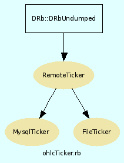

|  |
Methods
Public Instance methods
[ show source ]
# File ohlcTicker.rb, line 150 def output @ohlcRecord.on_ohlc_ready do |ohlc| File.open("#{@stock.ibSymbol}.ohlc",'a') do |thisFile| $,="," print ohlc.printCSV thisFile.print ohlc.printCSV end end end